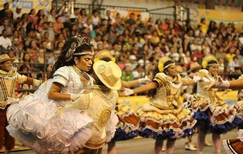
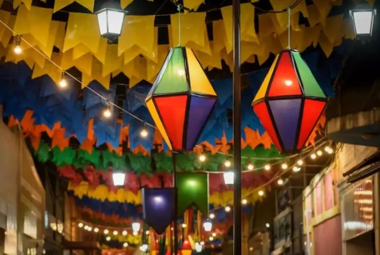
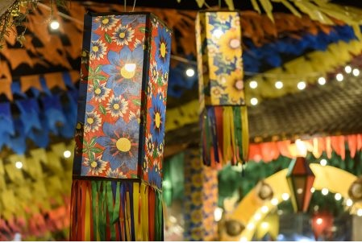

Shows da programação junina, espetáculo de Marco Luque, exposições e mais: confira agenda cultural no
Grande Recife.
Ainda no clima do São João, a agenda cultural do g1 reúne atrações como shows de forró e apresentações de
quadrilhas juninas no Grande Recife. Também há exposição de artes visuais e mostra interativa para as
crianças se divertirem.
Ler mais

A programação do São João do Recife Antigo 2025
A programação do São João do Recife Antigo 2025 ainda não foi divulgada. No entanto, a festa de São João
no Recife em 2025 terá 17 dias de duração, com mais de 1200 atrações distribuídas em 14 polos espalhados
pela cidade, incluindo o Sítio Trindade, Avenida Rio Branco e Pátio de São Pedro, que são os principais.
Entre os artistas confirmados, estão nomes como Alceu Valença, Elba Ramalho, Fafá de Belém, Isadora Melo,
Joyce Alane e Lia de Itamaracá. A programação completa, incluindo horários e atrações de cada polo, será
divulgada em breve.
Ler mais

Destaque para Olinda com sua programação do São João 2025
A programação do São João de Olinda em 2025 ainda não foi divulgada oficialmente pela prefeitura, mas o
São João da cidade terá uma programação extensa, descentralizada e com foco na cultura popular, incluindo
apresentações de grupos folclóricos e cortejos. A programação incluirá eventos na Praça do Carmo e o
Circuito do Milho, que percorrerá diversos bairros. Além disso, o Sítio da Trindade, no Recife, terá uma
programação com concursos de quadrilhas, shows e apresentações de cultura popular.
Ler mais